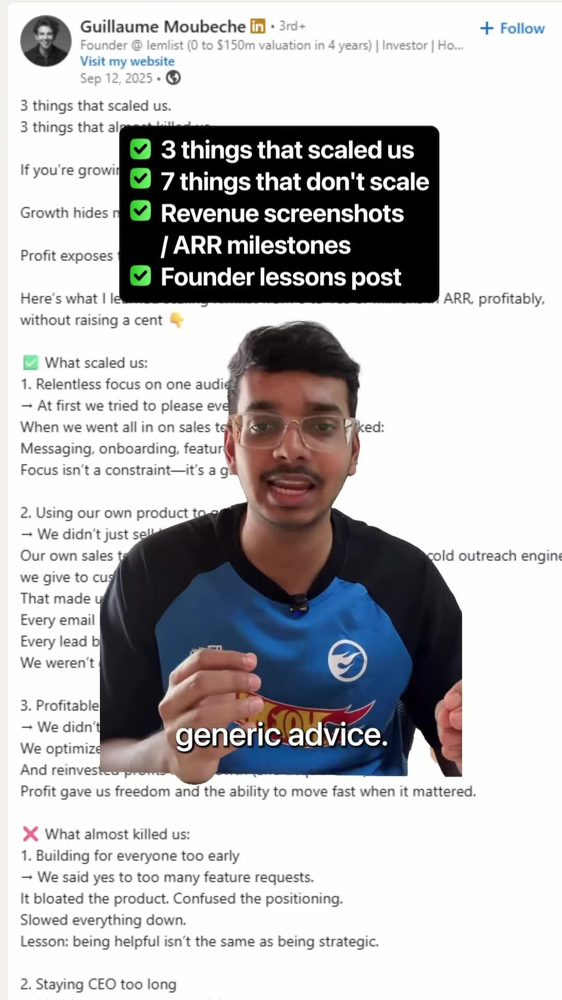
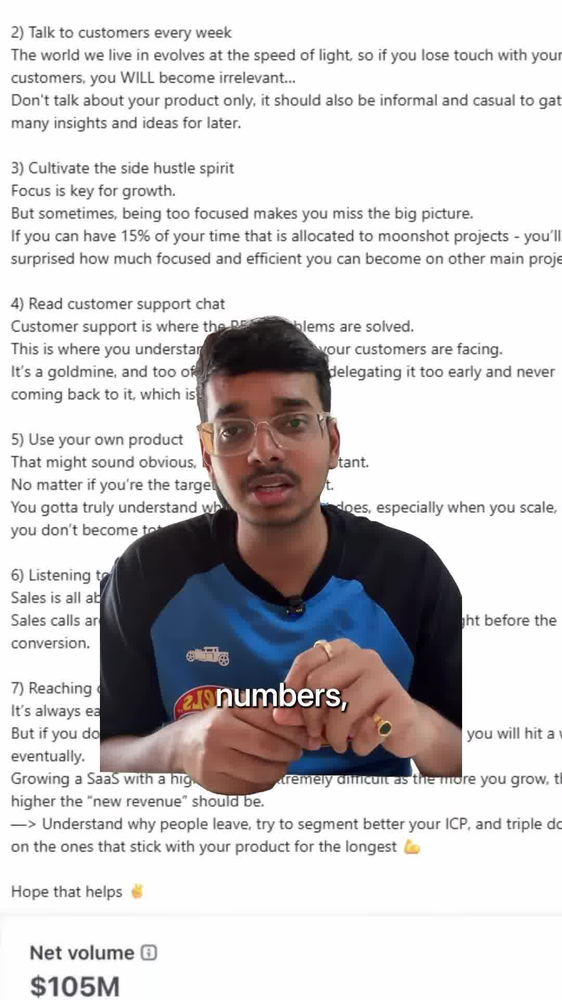
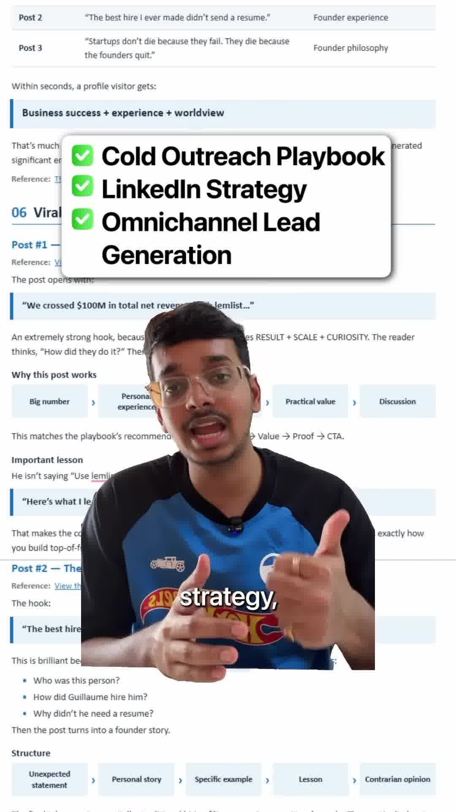

Executive Summary
Most B2B SaaS founders believe that scaling beyond $10M ARR requires either millions in venture capital or aggressive paid customer acquisition (Google Search Ads, LinkedIn sponsored updates). In contrast, Guillaume Moubeche bootstrapped cold outreach platform lemlist to $25 Million ARR with zero venture capital and zero paid ad spend.
The primary distribution engine was relentless, radical-transparency founder-led content on LinkedIn. In this analysis, growth strategist Abhijeet Awsarmal dissects the core pillars of Guillaume's organic LinkedIn playbook: authentic transparency, counter-narrative product positioning, and public tear-downs.
Core Visual Demonstrations



The 3 Pillars of Guillaume's $25M Content Engine
1. Radical Operational Transparency vs Generic Motivational Advice
While typical executives post polished PR announcements, Guillaume publishes raw, unvarnished business metrics:
- Exact revenue milestones and monthly recurring revenue (MRR) plateaus.
- Failed product features, abandoned sub-brands, and negative customer churn spikes.
- Full screenshots of real cold email sequences that booked high-ticket enterprise deals.
This level of radical honesty builds unmatched algorithmic trust. Readers do not perceive the content as marketing; they view it as an open-source MBA in modern SaaS execution.
2. Counter-Narrative Category Positioning
When lemlist launched, the cold email space was heavily commoditized by legacy tools (Mailshake, Woodpecker, Reply.io). Rather than competing on generic email delivery rates or pricing, Guillaume centered his content around a single differentiated mechanism: personalized dynamic images.
By consistently sharing side-by-side A/B test data proving that dynamic personalized images yielded 3x higher reply rates than standard plain-text templates, his LinkedIn content naturally funneled sales leaders into adopting lemlist as the category leader for modern outreach.
3. Public Cold Email Teardowns
Instead of telling people what to do, demonstrate it live. Guillaume frequently takes horrible, spammy cold emails received in his own inbox, tears down their structural defects (weak subject lines, self-absorbed opening lines, unclear CTAs), and rewrites them in public. This provides immediate actionable value while effortlessly showcasing product authority.